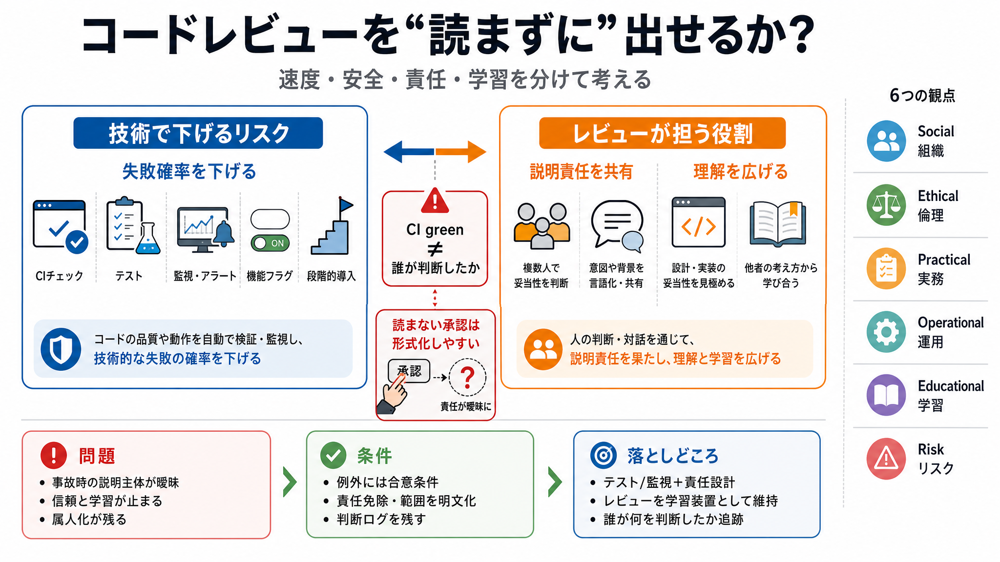

AI at Honeycomb: What's Actually Working (w/ CTO Charity Majors)
Charity Majors is the CTO of Honeycomb - an observability platform used by top engineering orgs like Dropbox and Interco…

読まずに出す？
「AIで速く出す」と「安全に出す」は両立できるのか。ここでは“読まない承認”に対する組織的な反論を整理します。
心理的安全性の誤解
「CIやテストが通れば読まなくても安全では？」という議論は、技術リスクと“責任の所在”を混ぜがちです。事故時に誰が説明責任を負うかが未設計だと、レビューの意味が薄れます。
ボタンの前後
承認が「形式」になると、なぜ手作業でボタンを押すのかが空文化します。自動化があっても、判断主体（責任を負う人）が必要です。
レビューの二重役割
コードレビューは“バグを見つける装置”に留まりません。責任の分散と、コードベースの理解をチームに広げる学習装置です。
“技術だけ”の限界
テスト・監視が十分でも、重大事故が起きたときの説明主体が決まっていないとレビューの価値が残りません。つまりリスクは“起こる確率”だけではないのです。
同じにしない
元記事側の評価（evals）、機能フラグ、ガードレール、観測性、影響範囲の縮小などは有効です。しかしそれだけでは“責任と学習”を置換できません。
受け入れ条件
“読まずに出す”を許すなら、バグ・セキュリティ・ダウンタイム等の損害に対して、責任を負わない（または免責条件を負う）本人が書面で提示すべきだ、と投稿者は要求します。
投稿の強み/限界
強みは、議論をテスト/監視中心から“責任と学習”へ戻した点。限界は、免責を「書面で足りる」に単純化し過ぎている可能性です。
論点を分解
この議論は「技術」だけでなく、社会・倫理・実務・運用・教育・リスクの設計問題です（Social/Ethical/Practical/Operational/Educational/Risk）。
まとめ
「読むこと」を全面否定せず、技術対策（テスト/監視/ガードレール/段階導入）と同時に、責任設計と学習設計を守るべきです。AIで速度が上がっても、“誰が何を判断したか”の追跡は消えません。
Charity Majors is the CTO of Honeycomb - an observability platform used by top engineering orgs like Dropbox and Interco…
Charity Majors is Co-Founder and CTO of Honeycomb, which provides full-stack observability that enables engineers to dee…
Honeycomb was built for the AI era. Learn how to futureproof your software for what comes next. #### Why Honeycomb. Disc…
An interview with Charity Majors is the CEO and cofounder of Honeycomb, a tool for software engineers to explore their c…
Most notably at the mobile app development company Parse, where she was the first very first ops and infrastructure hire…